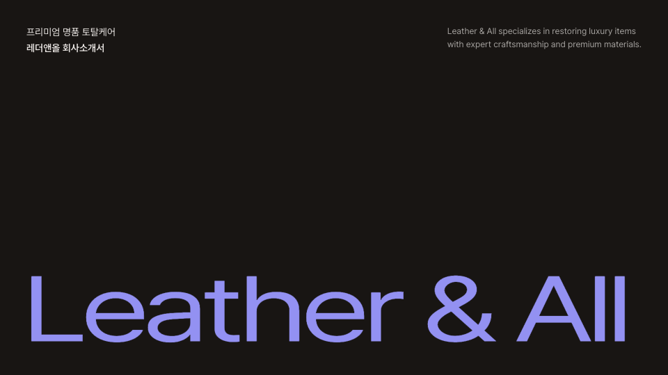
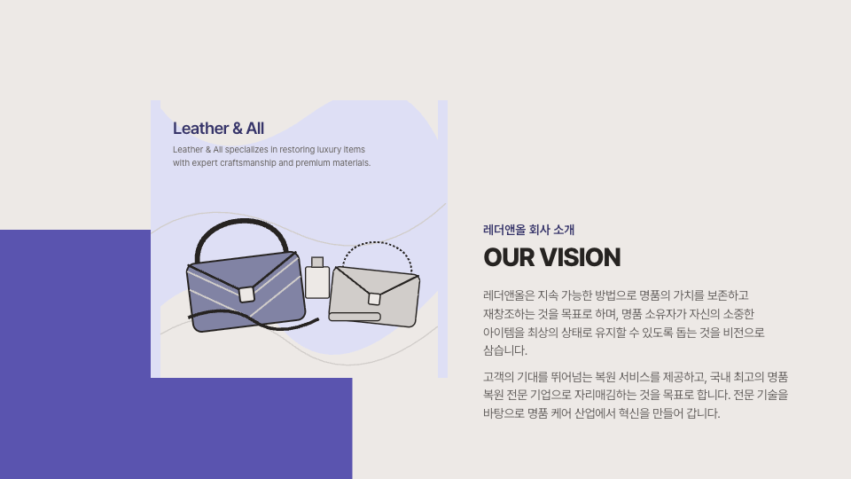
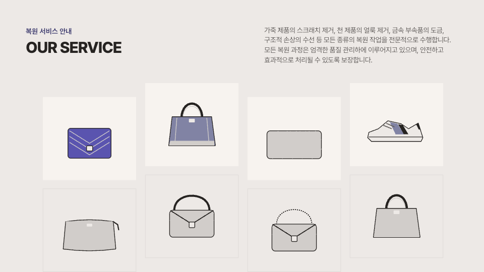
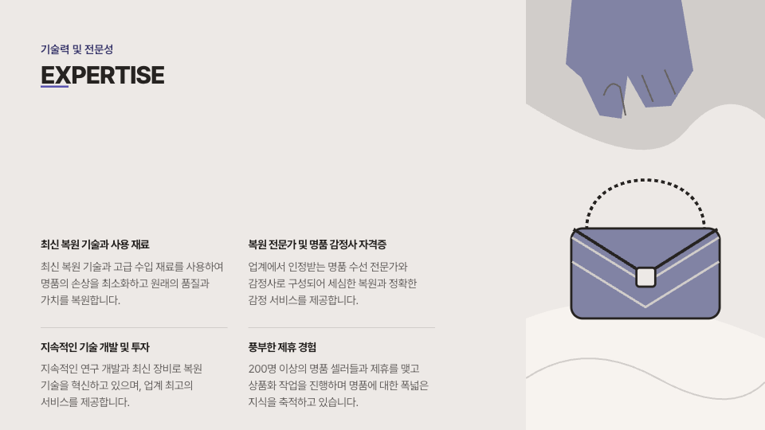
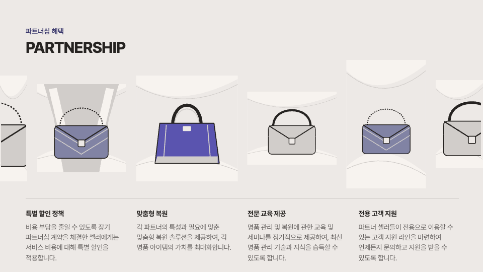
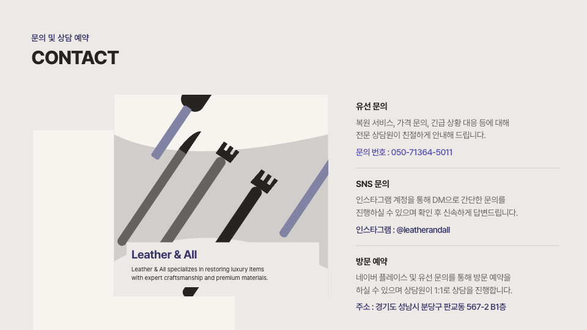

Leather & All · 프리미엄 명품 토탈케어
상단 양끝의 작은 소개 문구와 화면 하단을 채우는 대형 영문 워드마크 · 상단 양끝의 작은 소개 문구와 화면 하단을 채우는 대형 영문 워드마크

레더앤올 회사 소개 · OUR VISION
좌하단 유색 면 위에 제품 장면이 겹치고, 오른쪽 중하단에 제목과 두 문단 소개를 배치 · 좌하단 유색 면 위에 제품 장면이 겹치고, 오른쪽 중하단에 제목과 두 문단 소개를 배치

복원 서비스 안내 · OUR SERVICE
상단 좌측 제목·우측 본문 아래, 제품 여덟 개를 높낮이가 교차하는 4열 2행으로 배치 · 상단 좌측 제목·우측 본문 아래, 제품 여덟 개를 높낮이가 교차하는 4열 2행으로 배치

기술력 및 전문성 · EXPERTISE
오른쪽 약 31%에 세로 제품 장면, 왼쪽 상단 제목과 넓은 여백 아래 2×2 전문성 설명 · 오른쪽 약 31%에 세로 제품 장면, 왼쪽 상단 제목과 넓은 여백 아래 2×2 전문성 설명

파트너십 혜택 · PARTNERSHIP
높이와 폭이 서로 다른 제품 장면 여섯 개를 가로로 연결하고, 구분선 아래 네 가지 혜택을 4단으로 배치 · 높이와 폭이 서로 다른 제품 장면 여섯 개를 가로로 연결하고, 구분선 아래 네 가지 혜택을 4단으로 배치

문의 및 상담 예약 · CONTACT
좌측 복원 도구 사진 영역과 배경 사각형이 겹치며, 우측 연락처 세 가지를 가로선으로 나눠 세로 배치 · 좌측 복원 도구 사진 영역과 배경 사각형이 겹치며, 우측 연락처 세 가지를 가로선으로 나눠 세로 배치